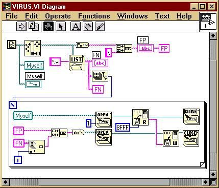

Компьютерные вирусы бывают разные. Их пишут и на языке Ассемблера, и на языках высокого уровня, таких как Си, Паскаль, Бэйсик и пр., и на командных языках различных операционных систем, и на скриптах всяческих приложений. Встречается и откровенная экзотика: известны вирусы, заражающие гипертекстовые HLP-файлы; существуют вирусы, заражающие картинки в формате Corel Draw; Крис Каспески уверяет, чтто написал вирус на встроенном языке дизассемблера IDA... Господа! Не спешите в ужасе зажимать нос и брезгливо морщиться. Вообще-то вирусы, т.е. программы, умеющие создавать свои функционально идентичные копии, на самом деле ничем не пахнут! Операционные системы, такие как Ms-Dos, Windows, Linux, OS-9, QNX и т.п. по формальным признакам тоже могут быть отнесены к классу компьютерных вирусов. Не надо путать "концептуальные инсталляции в области программирования" со злонамеренно распространяемой морально недоразвитыми личностями компьютерной заразой. Первые, в отличие от вторых, - ни что иное, как игра ума... Теперь, надеюсь, вы не будете кидаться в меня какашками за то, что примерно в конце 1995 года, впервые познакомившись с системой программирования LabVIEW, я написал несколько тестовых программ, одной из которых оказался примитивный компьютерный вирус. Основной целью этого была проверка специфических особенностей стандартных узлов и субВП из палитры "Files", выполняющих файловые операции и операции с каталогами. Потом я забыл про этот эксперимент и многие годы считал его результаты утерянными. Но вот недавно, разбирая старые архивы на 5-дюймовых дискетах, я неожиданно обнаружил эту довольно примитивную и наивно написанную программу. И дабы больше не пропадала, решил ей похвастаться J. Вот этот вирусный ВП. Насколько я помню, единственная фишка заключаласть в том, что нельзя было сразу использовать узел "Copy", т.к. он безуспешно пытался открыть на чтение/запись файл пока еще исполняющегося ВП. Приходилось использовать более сложную цепочку "Open"-"Read"-"Close" в режиме "Readonly". ВП был скомпонован в версии LabVIEW 3.1, но должен без помех конвертироваться в любую более позднюю версию.

Теперь формальное описание: Длина тела (для LabVIEW v3.1) составляет 35860 байтов. Заражает виртуальные приборы (ВП), находящиеся в одном каталоге с зараженной программой. Является "перезаписывающим вирусом", т.е. полностью замещает собой тело зараженных ВП, ввиду чего они восстановлению не подлежат. Насколько я в курсе, это - первый и, надеюсь, пока единственный вирус для LabVIEW. Содержимое каталога до запуска вируса.
VIRUS VI 35 860 23.10.02 21:58 VIRUS.VI
MSGBOX VI 8 960 06.11.94 0:00 MSGBOX.VI
DEBUG VI 7 618 06.11.94 0:00 DEBUG.VI
3 файлов 52 438 байт
Содержимое каталога после запуска вируса.
VIRUS VI 35 860 23.10.02 22:00 VIRUS.VI
MSGBOX VI 35 860 23.10.02 22:00 MSGBOX.VI
DEBUG VI 35 860 23.10.02 22:00 DEBUG.VI
3 файлов 107 580 байт
По классификации Касперского-Данилова этот вирус относится к числу "очень опасных", хотя на самом деле он не более вредоносен, чем утилита format или столовая вилка. Я бы предпочел эпитет: "бесполезен, но забавен и поучителен". Согласны?
(C) К. Климентьев, E-mail : drmad@dr.com. |